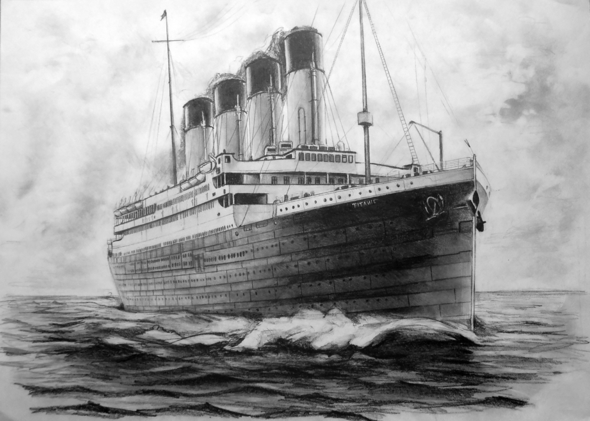
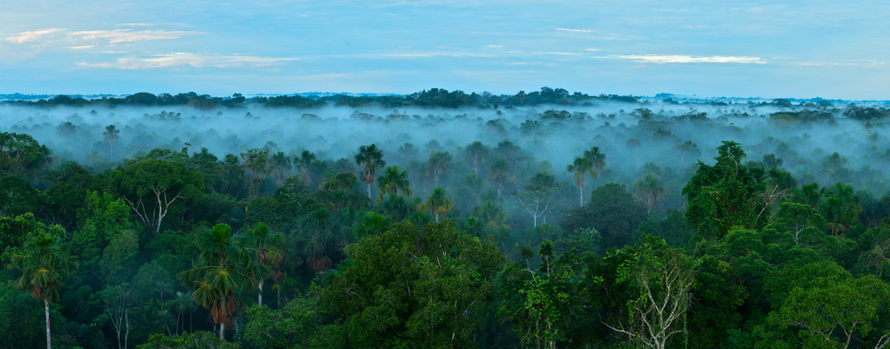

The primary objective of this project is to conduct a comprehensive analysis of the Titanic dataset, shedding light on patterns, correlations, and insights that can deepen our understanding of the events surrounding the disaster. I seek to answer a multitude of questions, exploring the impact of socio-economic factors, family relationships, age, gender, and other variables on the likelihood of survival. Through statistical analysis and visualization techniques, I aim to discern underlying trends, draw meaningful conclusions, and contribute to the broader narrative of the Titanic tragedy


The Amazon Rainforest, often referred to as the "Lungs of the Earth," is one of the most biologically diverse and ecologically vital ecosystems on our planet. Spanning nine South American countries, including Brazil, Peru, Colombia and Venezuela
The Amazon Rainforest is an awe-inspiring natural wonder that covers approximately 5.5 million square kilometers, making it the largest tropical rainforest in the world.
It is Situated predominantly in the Amazon Basin. The rainforest extends across Brazil, where the largest portion lies, and extends into neighboring countries in South America. Its geographic expanse is immense, reaching from the Atlantic Ocean in the east to the Andes Mountains in the west.
The Amazon's ecological importance cannot be overstated. Its complex web of life, from the towering canopy down to the forest floor, is a critical component of the Earth's biosphere. It helps maintain global climate stability, supports a wide range of ecological interactions, and sustains a vast array of species..
This Project talks about the rate of heart Disease in a Datasets and results are given by Proper Visuakizations.